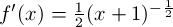

Let me divert discussion about Taylor Series for one second and first talk about transcendental functions. This will help motivate the problem. Mathworld defines a transcendental function as "a function which is not an algebraic function." In other words, it is impossible to do a finite combination of algebraic options on the input to a function to match the output in all cases. What the heck does that mean? It basically boils down to the fact that it is impossible find a finite polynomial that matches a transcendental function exactly. Some examples of transcendental functions are eX, ln(x), sin(x), and sqrt(x).
One immediate consequence of this is that, unfortunately, it's not going to be so simple to exactly evaluate these transcendental functions at a specific point with a closed number of algebraic operations. So if someone asks you "what's log base 10 of 20?," you won't be able to just bust out a pen and paper and work it out in front of them. So what can you do? Well you know it's between 1 and 2. You could try drawing a log curve on a piece of paper and doing some sort of interpolation guesswork. But can you do better? Well, it turns out you can if you make one very odd conceptual leap. I told you we can't represent transcendental functions as finite polynomials. But I never said we couldn't try to represent them with infinite polynomials, did I? This is where Taylor Series comes in. Now you might be thinking, "alright, even if we do find this infinite polynomial to represent..say...x1/2, what good is that? I don't want to sit there for all of eternity writing down what the square root of 2 is." Well it is great in theory to have these infinite polynomials, but it is also great in practice, because we can actually use finite approximations of them to find (damn good!) estimates of our transcendental functions (so you won't have to sit there forever to come up with an answer that's good enough). So without further ado, let me begin to derive them for you....
Let's start with a transcendental function f(x). Let's assume that I did manage to find an infinite polynomial that matched f(x) exactly at every point. Define that infinite polynomial, g(x), as follows:
Where c0, c1, c2, etc are the coefficients of each part of the polynomial, and a is some constant (we can say a is the point around which the polynomial is "centered"...more about that later). g(x) is the most general polynomial expressible since the coefficients are expressed as variables. We need to solve for those coefficients if we want g(x) to match up with f(x) exactly. To do this, we note that:
Since f(x) and g(x) represent the same function, all of their derivatives match.
If we're really clever, we can exploit this fact to our advantage. Let's first see if we can solve for c0 in terms of a known value of f(x). To do this, we do a little trick by evaluating both functions at x=a. This will cause all of the terms in the infinite polynomial to drop out except for the very first coefficient, since they will all be a-a (0) raised to some power.
Therefore, c0 = f(a).
Let's now use that fact about derivatives, combined with this trick, to see if we can keep going and figure out some more coefficients. First, start by taking the derivative of both functions, and remember that their derivative functions are equal since the functions themselves are assumed to be equal:
Now use that trick again and evaluate f'(x) and g'(x) at a. Once again, everything drops out except for c1, leaving: c1 = f '(a)
Next step, take the second derivative, and evaluate at x=a:
f ''(a) = g''(a) = 2c2 c2 = f ''(a) / 2
Let's go one more step, and perhaps then we can see a pattern beginning to emerge:
f '''(a) = g '''(a) = (3)(2)c_3 c3 = f '''(a) / [(3)(2)]
Now we should begin to see a pattern emerge with the coefficients. Each time we take the derivative of the polynomial function, we simply use the power rule on each one of the polynomial terms, bringing it down one power and bringing the previous power down as a coefficient. This keeps happening until that term gets obliterated, leaving it as a constant. In other words, after taking n derivatives, the term that was originally cnxn is now (cn)n!. When we plug in a into that derivative function, everything gets wiped out except for that constant coefficient (as we can see by those examples above). Therefore, we always have:
fn(a) = (cn)n! ***cn = fn(a) / n!
We now have a general formula for all of the coefficients, leaving us enough information to define the entire infinite polynomial. Here is the formal definition of the Taylor polynomial using the information from above:
Now that we have this infinite polynomial after doing some roundabout (and not entirely intuitive) tricks, let's see if we can gain some intuition about the polynomial and make some more sense about how it matches up with the original function. Okay first let me make a distinction with terms here; the "Taylor Series" is the entire infinite polynomial for some function. A Taylor Polynomial, on the other hand, is a subset of that polynomial taken out to some finite degree. For example, the function f(x) = 3*(x-2)3 + (x-2) + 5
could be a "Third Order Taylor Polynomial centered about 2" for some function. When I say "centered about 2," I mean that in equation 6, a=2. When I say the "third order Taylor polynomial," I mean that we've brought the infinite polynomial for some function out only to the third degree, simply leaving out all of the high order terms. Thus, we would not expect this polynomial to match up exactly with the original function anymore, but rather it is an approximation.
So how well does a taylor polynomial of a certain order match a function? Let's start with an example and see what happens. Take the function:
Let's start with the first order talyor polynomial for f(x), centered about a = 3*PI / 4
Here's a graph of that function, matched up with the original
Another name for the first order taylor polynomial is the "linear approximation of a function f(x)". It ends up just being the tangent line at a point! You can see it does a great job really close to the point where we chose to center the Taylor Polynomial, but it starts to do a horrible job when we get just a little outside of that neighborhood. This makes sense, because you would expect the higher order terms to be negligible if (x-a) is small; in other words, if (x-a) << 1, raising it to a higher power makes it even smaller, so we might as well just ignore those terms if we have an x that's close to a. The linear approximation of a function is very useful in science and engineering, and you will probably see it pop up a lot because it simplifies math so much.
Alright, let's see what happens when we compute the second order Taylor Polynomial for this function, centered about a = 3*PI / 4:
Here's a graph of this
As you can see, this does a better job than the first example; it hugs the function a little bit longer before it starts to shoot off and deviate like crazy. In general, the more terms you take, the better job the Taylor Polynomial does. In the next section, I'll show how to quantify that statement and figure out exactly what the error is when using these approximations.
Now I'm going to explain how to reason about the accuracy of Taylor Polynomials. This is an important question to answer, since we will need to use them in practice (who has time to fill in an infinite polynomial?). To answer this question, I'm going to use another trick and start doing something that's not very intuitive, but trust me, it will answer this question
As usual, let's start with some function f(x). Take the following definite integral:
Rearrange terms
Now do integration by parts to obtain the integral of f '(t)dt, letting u=f '(t) and dv = dt:
Evaluate the first part of the definite integral
In the xf '(x) term, plug in the following (this is using the same trick we used right at the beginning when we took the integral of f'(t) from a to x):
Now combine like terms and plug this back into the original equation for f(x)
Okay, now this is starting to look a little bit more like the Taylor Series. Let's take it one step further now:
Proceed again via integration by parts, letting u = f''(t) and dv = (x-t)dt. Then v = -(1/2)(x-t)2.
Once again, evaluate the first part of the definite integral
The (x-x) term will drop out
Now plug this back into the original equation for f(x)
And if we broke up that integral at the end again using integration by parts, we would get the following:
Hopefully by now you can see a pattern. When we continue doing integration by parts, we continue to get more terms of the Taylor polynomial for a particular function, plus some definite integral. The difference between f(x) and its nth order Taylor Polynomial is that definite integral, which is the following (I'll call the function Rn(x)):
This is known as the remainder term, because it gives what's left over after evaluating the nth order Taylor Polynomial for some x. This definite integral evaluates to a number (that's what definite integrals do) for every x (well, when the function is "well-behaved," at least), so we now have an expression for the exact amount of error introduced by using a Taylor approximation!
Usually, you won't be able to say what the integral is exactly, but it's not very hard to figure out an upper bound for the absolute value of the error. Let's start back with that remainder term again, and look at the accumulator function inside of the integral:
If we can find an upper bound on the absolute value of this function, then we can put that upper bound back in the integral and get a constant back. First, we find the absolute maximum that fn+1(t) reaches on the interval [a, x]. I'll call this M. Then we note that on the interval [a, x], (x-t)n is maximized when t = a. Therefore:
which, using the fact that
implies that
By the power rule and the fact that M is a constant upper bound of the (n+1)th derivative of f:
Thus, we can conclude that the absolute value of the remainder is no more than
Let's see an example of this in action:
Ex 2: Take the function f(x) = (x + 1)1/2. Let's center a third order Taylor Polynomial around a = 0, and see how well we can do estimating the sqare root of 2 (plug in x=1).
f(0) = 1

f '(0) = 0.5
f ''(0) = -0.25
f '''(0) = 0.375
The third order taylor polynomial, therefore, is
g(1) = 1 + 0.5 - 0.125 + 0.0625 = 1.4375
Now how close is that to the actual square root of 2? Let's look at the formula for the remainder again:
We've taken the 3rd order Taylor approximation, so n=3. We now need to find M, the upper bound of the fourth derivative of (x+1)1/2, which is
This is on the interval x = [0,1]. (x+1) raised to a negative power only decreases as the argument x becomes more positive, so the absolute max must occur at x=0. So M = |-15/16*(1)-7/2| = 15/16.
Plugging this all back in, we get that
So our estimate of 1.4375 isn't off by more than 0.0391 of the actual square root of two. Not bad for an estimate we did by hand, huh? When I tell my calculator to give me the square root of 2, it gives me 1.414, which is less than 0.0235 of our estimate (which is within our confidence interval of += 0.0391).
Another thing to note about this Taylor Series example is that it produces an alternate series, so taking more terms continues to alternate above and below the actual value of the square root of two, getting closer and closer to that actual value.
You'll often hear the term "Maclaurin Series" pop up when people talk about Taylor Series. This is just what we call a Taylor Series that we choose to center around the origin (a = 0):
In my opinion, these are actually slightly easier than Taylor Series. I'll finish off this section by deriving the Maclaurin series of a few common funtions (ones you'll probably need to memorize for a test, but that are easy enough to derive if you forget them).
....and the pattern continues to circle through (1, 0, -1, 0). This translates into the following Maclaurin series:
Notice that this series only has even order terms in the polynomial. This should make sense since cos(x) is an even function. This is how I remember which one of cos(x) and sin(x) has even order terms, and which one has odd terms. Another way to help remember is that cos(x) is 1 at 0 and sin(x) is 0, so the maclaurin series for cos(x) will have a 1 in it, while the maclaurin series for sin(x) will only have x terms raised to a power.
Finally, note that we could have derived the maclaurin series for cos(x) from the maclaurin series for sin(x) by simply taking the derivative of both sides of the equation above (known as "term by term differentiation")
This one is super easy because all of the derivatives of ex are ex. And for the maclaurin series, we evaluate them all at x=0. So every single coefficient is e0 = 1
This is why you may have seen the following definition of e
You may have heard that it is possible to approximate sine of theta as simply theta when theta is small. This is used for such things as the simple pendulum. Well here's a quick proof of that fact using the Maclaurin Series for sine:
The higher order terms theta3, theta5, etc. are not large when theta << 1. So it doesn't seem like it would hurt to neglect them when theta is small. But let's be a little more precise. Recall the remainder theorem I discussed in section 4:
One way to look at this is that taking theta to approximate sine is taking the first order Taylor Polynomial (linear approximation), so n=1 in the above formula. And we've taken the Maclaurin series of sin(theta) so a=0. M is the absolute max that the second derivative of sin(x), which is -sin(x). |-sin(x)| never goes above 1, so M=1. Plugging this all into that formula, we get:
But actually, we can come up with an even tighter bound by remembering that the second order term x2 has a coefficient of zero, so the "linear approximation" of taking theta is really just as good as a quadratic approximation would have been. So we've actually gotten all the accuracy of the quadratic approximation by just taking the linear term. Plugging n=2 back into the formula, we now have:
This bound gives a percent error of 100%*(theta3/6)/theta = (theta2*100/6) percent. When theta = 0.25, the error is no more than 1.04% (very small). When theta = 0.5, this is no more than 4.17% error. Even when theta = 1, the error is no more than 16.7%. This graph below plotting x and sin(x) from 0 to pi/2 shows even more convincing visual evidence for how accurate this approximation is:
One more quick note and then I think we're done. Something that used to confuse the heck out of me with Taylor Series is choosing what a is in the equation:
Choosing a different a does not "shift" the function horizontally at all. All it does is make the Taylor Polynomials more accurate close to a. Regardless of the a you choose, taking the Taylor Series out to infinity should match up with the original function.
This is an example of how choosing a different a value affects a second order Taylor Polynomial approximation of ex. It simply does a better job closer to where it was chosen, but note that the taylor polynomials don't have to look anything alike.
![\[ \int_a^x f'(t)dt = xf'(a) - af'(a) + x\int_a^x f''(t)dt - \int_a^x tf''(t)dt .\]](latex15.png)
![\[ \int_a^x (x - t)f''(t)dt = [-\frac{1}{2}(x-t)^2f''(t)]_{t = a}^{t = x} - \int_a^x -\frac{1}{2}(x-t)^2 f'''(t)dt.\]](latex18.png)

![\[ | \frac{M}{(n+1)!}(x-a)^{n+1} | \]](latex31.png)

![\[ sin(\theta) = \theta - \frac{\theta^3}{3!} + \frac{\theta^5}{5!} - \frac{\theta^7}{7!} + ... \approx \theta \]](latex46.png)